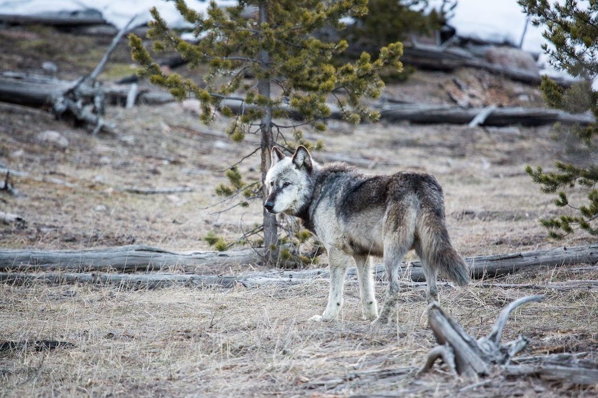
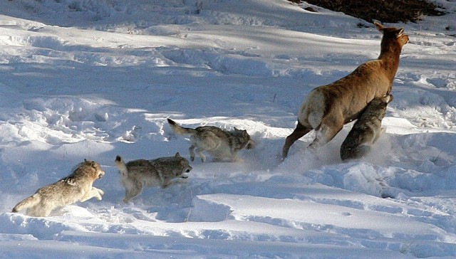
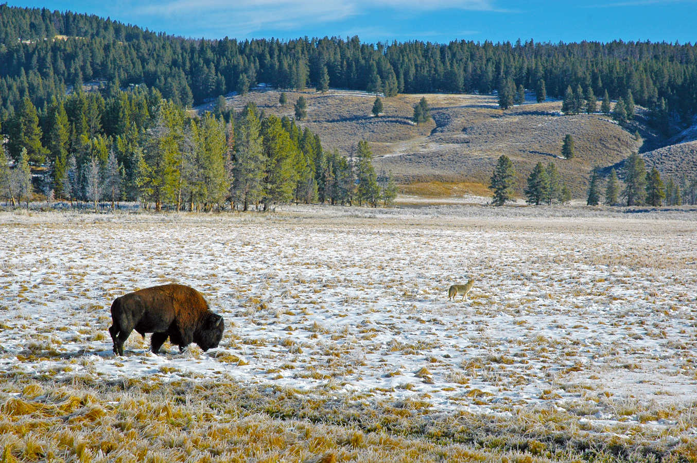
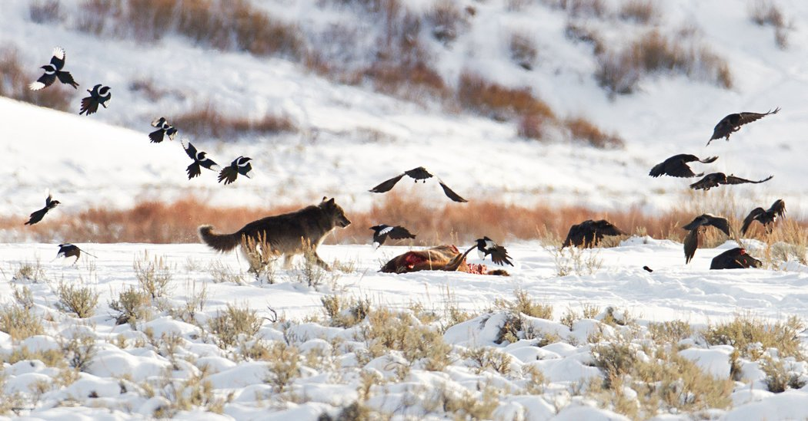

Wat is de invloed op andere organismen?
Predatoren besturen ecosystemen. Dat klinkt wellicht vreemd, maar het is écht zo. We weten allemaal dat wolven op een boel dieren jagen, maar wat we niet allemaal realiseren, is dat ze ook leven geven aan een groot aantal andere dieren.
Een jongeman genaamd Aldo Leopald kwam erachter dat wanneer de wolven afstierven, de hertenpopulatie sterk begon te stijgen. Deze herten aten alle planten op in de omgeving, waardoor er niks of nauwelijks meer overbleef.
In vroeg 1900, was Yellowstone National Park vol met grassen en bomen en bloeiden het hele ecosysteem. Maar in het jaar 1992, waren er nauwelijks planten over. Biologen zochten naar de oorzaak van dit fenomeen en er waren verschillende theorieën, waaronder
klimaatveranderingen of bosbranden. Maar beiden leken niet het geval te zijn. Volgens Bill Ripple, van Oregon State University, was buiten het park de condities van verschillende soorten bomen in goede staat, terwijl er in het Yellowstone
park er nauwelijks bomen waren. Samen met Eric Larson, van University of Wisconsin, kwam Ripple erachter dat er bijna geen middeljarige bomen in het park stonden. De meeste bomen waren 70 jaar oud. Door de ringen in de boomstronken
te tellen, kwamen ze erachter dat de bomen stopten met regenereren in de jaren 30 van de 20ste eeuw. De biologen vroegen zich af wat er nou rond 1930 is gebeurd. Wat ze wel wisten, is dat vóór 1930 de laatste wolf werd neergeschoten
door jagers.

Afbeelding 10: lone wolf
Volgens jaren later onderzoek, bleken de uitspraken ook daadwerkelijk te kloppen. In 1995 werden de wolven in het Yellowstone National Park geherintroduceerd, waar men veel van heeft geleerd over de effecten en de invloed van predatoren op de natuur.
Vroeger werd er namelijk gedacht dat een ecosysteem werd gemaakt met plantenleven als fundering, waarna alle andere organismen rond deze fundering ontstonden. Zodra er gezond plantenleven ontstaat, ontstaat er een balans tussen alle
insecten, kleine diertjes, vogels, grote herbivoren en uiteindelijk de toppredatoren. Bijna alle conservatie en herintroductie projecten werden op dit principe gebouwd. Biologen zouden in een beschadigd gebied eerst al het plantenleven
opbouwen en weer tot bloei laten komen, voordat ze andere dingen gingen doen. Maar sommige ecosystemen bleken hierdoor niet hersteld te kunnen worden zonder het herintroduceren van een bedreigde toppredator.
Sinds het herintroduceren van de wolven in Yellowstone, werd het nationale park hét wetenschappelijke laboratorium op basis van de observatie van wilde dieren en het herstellen van ecosystemen. Allerlei wetenschappers van over de hele wereld zijn naar
het nationale park gekomen om het effect die de wolven uitoefenen met hun eigen ogen te bekijken.

Afbeelding 11: roedel wolven op pad
Na de herintroductie van de wolven in Yellowstone, zijn de elanden, herten en bizons sterker geworden, de bomen en andere planten gezonder en de grassen hoger.
Wolven jagen voornamelijk op grote herbivoren, waardoor de populatie van deze dieren sterk afneemt. Maar de wolven jagen niet op willekeurig prooi. Ze prooien meestal op de zwakkelingen, zoals jongere of minder gezonde. Oudere elanden zijn, bijvoorbeeld,
groter en agressiever, waardoor het moeilijker is voor de wolven om op deze individuen te jagen. De wolven rennen achter de herten en elanden aan, waardoor zij worden geforceerd om harder, sneller en verder te rennen (zie afbeelding
10). Tijdens dat de elanden en herten rennen, zullen hun hoeven de bodem aanstampen, zodat er meer planten kunnen groeien. Vervolgens, als je niet snel genoeg bent of lang genoeg kan rennen, word je gepakt door de wolven. Hierdoor
zullen alle zwakke dieren in een populatie uitgeroeid worden, waardoor de sterke en gezonde overblijven en hun nakomelingen ook de best geschikte genen voor hun leefgebied zullen overerven. In het kort, de selectiedruk is weer toegenomen,
waardoor survival of the fittest weer in volle kracht geherintroduceerd is in Yellowstone.

Afbeelding 12: wolven die hun prooi opjagen
Niet alleen heeft de wolf invloed op de gezondheid van herbivoren, maar ze tasten ook het gedrag van deze soorten aan. Herbivoren zoals herten en elanden worden geforceerd om niet een al te lange tijd te blijven in hetzelfde gebied vanwege het risico
dat ze worden opgejaagd door wolvenroedels. Door deze migratie zullen de planten in het gebied minder aangetast zijn en kunnen ze sneller regenereren. Ook is het dat herbivoren het territorium van een wolvenroedel niet durven te
betreden, waardoor er zogenaamde “bufferzones” ontstaan. Dit zijn gebieden tussen territoria van verschillende wolvenroedels in, waar de herbivoren vaak in goede omstandigheden leven. Wolven die hun roedel hebben verlaten vinden
vaak hier goed onderdak, veiligheid en eten, met minder risico om aangevallen te worden door wolvenroedels in de nabije gebieden. Alhoewel, dit betekent niet dat het waterdichte, veilige gebieden zijn. Het is mogelijk dat er om het
gebied wordt gevochten door de roedels in de omgeving en dat de eenzame wolf alsnog aangevallen kan worden.

Afbeelding 13: relatief dor landschap met bizon en lone wolf, bossen in de achtergrond
Door het migreren van de herbivoren en deze bufferzones, zal de plantengroei in andere gebieden, met name het territoria van wolvenroedels, sterk toenemen. Maar niet alleen dat, want door de afname van de populatie van bepaalde soorten herbivoren, kregen
de planten meer tijd om te groeien en zich voort te planten. Dit zorgde voor meer vegetatie en uiteindelijk een grotere biodiversiteit in het plantenrijk. Dit proces komt het meest voor in territoria van wolvenroedels en valleien
waar je een makkelijk prooi bent door de absentie van enige ontsnappingsroutes. Herbivoren durven zich niet te vestigen in deze gebieden, maar het proces gebeurt ook natuurlijk in andere gebieden vanwege de migratie van, bijvoorbeeld,
elanden. Deze gebieden zullen grotendeels onaangetast blijven, waardoor er een grote bloei van plantengroei plaatsvindt waaruit grote bossen en grassen ontstaan.
Uit het ontstaan van meer planten, zullen steeds meer dieren - vooral dieren die niet als prooi worden gezien door de wolf, zich vestigen in deze gebieden, omdat er meer voedsel en onderdak aanwezig is. Zodra er allerlei verschillende bossen ontstonden,
migreerden de vogels zich binnen deze gebieden. De hoeveelheid zangvogels nam sterk toe. De hoeveelheid bevers begon ook toe te nemen, omdat bevers ervan houden om bomen op te eten. En net zoals wolven, zijn de bevers ecosysteem
ingenieurs en maken ze holtes en dammen waar andere soorten weer in kunnen vestigen, zoals otters, muskusratten, eenden, vissen, reptielen en amfibieën.
Zoals in de rest van de Verenigde Staten, waren de coyote, of prairiewolven, populaties in Yellowstone bijna uit de handen gelopen. Maar sinds dat de wolven terugkwamen, begonnen ze de coyotes te doden en hebben ze de populatie van coyotes afgenomen met
wel 80 procent in gebieden waar wolven leven. De coyotes die er nog zijn, zijn een stuk schrikachtiger en voorzichtig geworden. Met de afname van coyotes begonnen de hoeveelheden van knaagdieren, zoals konijnen en muizen, toe te
nemen. Wat daar weer ervoor zorgde dat er meer haviken, wezels, vossen en dassen zich gingen vestigen, omdat zij weer meer eten voorziening hadden. Raven en arenden migreerden naar de gebieden waar wolven aanwezig waren, om te smikkelen
van de restjes die de wolven achterlieten. Ook verschillende soorten insecten eten van de karkassen die wolven achterlaten. Zelfs beren kwamen erbij om van de restjes te genieten of door de prooi van wolven te stelen, waardoor hun
populatie ook sterk toenam, maar ook omdat er nu meer bessen en dergelijke aan de regenererende planten groeien. De beren zorgden daarna voor een domino-effect en versterkten de impact van de wolven door een aantal andere populaties
van, bijvoorbeeld, herten af te nemen.

Afbeelding 14: wolf met een groep kraaien die een lijk omsingelen
In essentie, hebben wij, de mens, geleerd dat door de top van de trofische niveaus te herstellen, door bijvoorbeeld wolven te herintroduceren, het hele ecosysteem daar profijt bij heeft. Een wilde wolvenpopulatie zorgt eigenlijk voor een sterker, gezonder
en een meer gebalanceerd ecosysteem. Niet alleen de planten en dieren hebben hier profijt van, maar wij ook.